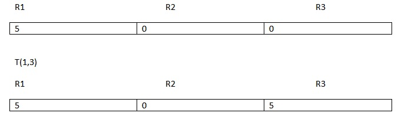
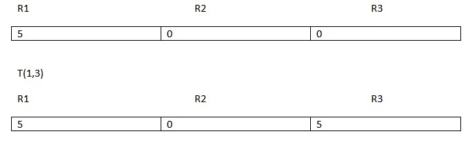
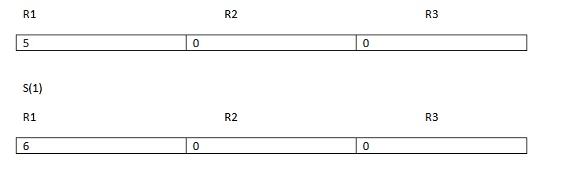
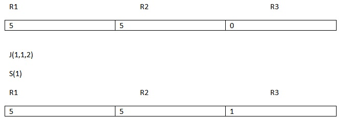

Unlimited Register Machine
Es una máquina teórica
Se asume que si una función se puede calcular en este sistema básico
entonces es una función computable.
La compuradora posee registros ilimitados sobre los cuales se pueden realizar cuatro operaciones Básicas:
T: Encargada de transferir lo que se encuentre en la celda m al destino de n

Z: Es aquella que toma un registro y reemplaza su contenido con un cero

S: Realiza un incremento en una unidada en la celda especificada

J: Se encarga de realizar una comparación entre dos registros, si su contenido es idéntico, saltará a
la instrucción correspondiente

En este ejemplo se observa que los registros especificados son idénticos, por lo tanto saltará a la
instrucción número dos, que indica aplicar la función suma al registro 3
aunque este ejemplo pareza redundante, ya que de no cumplirse de todas maneras saltaría a la instrucción siguiente
es meramente ilustrativo.
Formato de entrada:
La primera línea contendrá la inicialización de los registros, separados por espacios a partir del primer elemento
procura evitar dejar un espacio antes de colocar el primer registro, el programa producirá resultados incorrectos
Todas las demás corresponderán a las instrucciones del programa
Este compilador soporta las instrucciones Z S T J
En caso de introducir otra o colocarla en con letra minúscula, el programa dejará de compilar
En caso de introducir saltos de línea o líneas en blanco, el programa arrojará un error.
El programa ignora espacios y carateres de más, incluso argumentos
T(n,m) puede ser escrita como: Tn,m T(((((n, m) Tn, m) o incluso T asdsadndsadas,dasdasmdasds
También la función Z(m) puede ser escrita como: Z(n,m,p,q) y solo se tomará el primer número
encontrado de izquierda a derecha
Se puede aplicar la operación Suma a un registro que no se halla declarado al inicio
Se puede utilizar la función Transferir de un registro inicializado a uno inexistente.
En caso contrario, el programa dejará de compilar.
Al utilizar la función J(n,m,p) se debe procurar que tanto n como m
hayan sido inicializados de lo contrario se mostrará un lenguaje de error y dejará de compilar.
Esta página clasifica la infomación en pestañas, solo necesitas pasar el mouse para navegar entre ellas
Puedes minimizarla solo con volver a pasa el mouse sobre la pestaña activa o posicionándote sobre otra.
A pesar de ser una máquina de registros ilimitados, se recomienda utilizar menos de DIEZ MIL registros.
Este programa se encuetra escrito en lenguaje JavaScript
Se eligió tal por su potencia de procesamiento y su flexibilidad, ya que no es necesario instalar
algún complemento, lo único que se requiere es un explorador web, y cualquier dispositivo
con acceso a internet podrá visualizarlo, además el desarrollo web facilita y mejora la visualización
dándole un aspecto más agradable
Nota: Este desarrollo no tiene nada que ver con el ejemplo encontrado en internet
se puede encontrar aquí
y el código fuente de éste proyecto se puede encontrar aquí
El proyecto completo se puede encontrar aquí